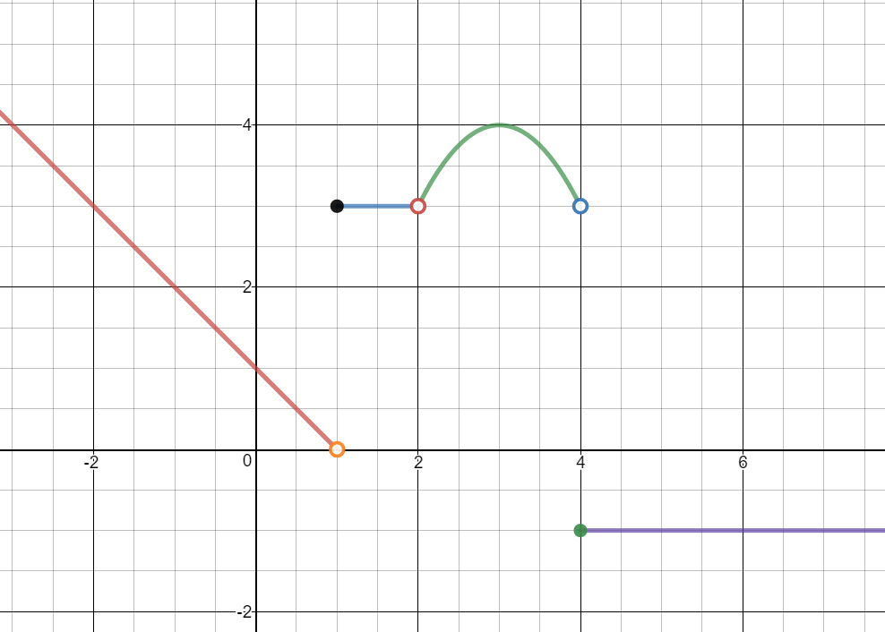

MATH 1830
Unit 1 Limits
1.1 Finding Limits Graphically
1.1 Video
Limits: A Graphical Approach
$f(x)= \begin{cases} -x+1 & x \lt 1 \\ 3 & 1\leq x\lt 2 \\ -\left(x-3\right)^2+4 & 2 \lt x \lt 4\\ -1 & x\geq 4\\ \end{cases} $
Use the piecewise function to answer the questions below.
Evaluate the limits graphically. If the limit does not exist, explain why.
-
$\mathop {\lim }\limits_{x\; \to {0^ - }} f\left( x \right) =$ $1$
-
$\mathop {\lim }\limits_{x\; \to {0^ + }} f\left( x \right) =$ $1$
-
$\mathop {\lim }\limits_{x\; \to 0} f\left( x \right) =$ $1$
-
$f\left( 0 \right) = $ $1$
-
$\mathop {\lim }\limits_{x\; \to {1^ - }} f\left( x \right) =$ $0$
-
$\mathop {\lim }\limits_{x\; \to {1^ + }} f\left( x \right) =$ $3$
-
$\mathop {\lim }\limits_{x\; \to 1} f\left( x \right)=$ Does not exist
The limits from the left and right are not equal, so the limit does not exist.
-
$f\left( 1 \right) =$ $3$
-
$\mathop {\lim }\limits_{x\; \to {2^ - }} f\left( x \right) =$ $3$
-
$\mathop {\lim }\limits_{x\; \to {2^ + }} f\left( x \right) =$ $3$
-
$\mathop {\lim }\limits_{x\; \to 2} f\left( x \right) =$ $3$
-
$f\left( 2 \right) =$ undefined
-
$\mathop {\lim }\limits_{x\; \to - 1} f\left( x \right) =$ $2$
-
$\mathop {\lim }\limits_{x\; \to 4} f\left( x \right) =$ Does not exist
The limits from the left and right are not equal, so the limit does not exist.
-
$\mathop {\lim }\limits_{x\; \to 2} f\left( x \right) =$ $3$
-
$\mathop {\lim }\limits_{x\; \to 3} f\left( x \right) =$ $4$
-
$\mathop {\lim }\limits_{x\; \to - 2} f\left( x \right) =$ $3$
-
$\underset{x\rightarrow-2}{lim}f(x)=$ Does Not Exist. There are different limits from the left and right.
-
$\underset{x\rightarrow-3}{lim}f(x)=$ $6$
-
$\underset{x\rightarrow0^{-}}{lim}f(x)=$ $-2$
-
$\underset{x\rightarrow0^{+}}{lim}f(x) =$ $-1$
-
$\underset{x\rightarrow0}{lim}f(x) =$ Does Not Exist. There are different limits from the left and right.
-
$f(0) =$ $-1.5$
-
$\underset{x\rightarrow2^{-}}{lim}f(x) =$ $7$
-
$\underset{x\rightarrow2^{+}}{lim}f(x) =$ $0$
-
$\underset{x\rightarrow2}{lim}f(x) = $ Does Not Exist. There are different limits from the left and right.
-
$f(2) = $ $7$
Problems from https://www.whitman.edu/mathematics/california_calculus/calculus.pdf
-
Box Office Receipts
The total worldwide box-office receipts for a long running indie film are approximated by the function $$T(x) = \frac{{120{x^2}}}{{{x^2} + 4}}$$ where T(x) is measured in millions of dollars and x is the number of months since the movie’s release. What are the total box-office receipts after:
- The first month?
$T\left( 1 \right) = \frac{{120{{\left( 1 \right)}^2}}}{{{1^2} + 4}} = 24$
The total box-office receipts after 1 month are \$24 million.
- The second?
$T\left( 2 \right) = \frac{{120{{\left( 2 \right)}^2}}}{{{2^2} + 4}} = 60$
The total box-office receipts after 2 months are \$60 million.
- The third?
$T\left( 3 \right) = \frac{{120{{\left( 3 \right)}^2}}}{{{3^2} + 4}} = 83$
The total box-office receipts after 3 months are \$83 million.
- The hundredth?
$T\left( {100} \right) = \frac{{120{{\left( {100} \right)}^2}}}{{{{100}^2} + 4}} = 119.95$
The total box-office receipts after 100 months are \$119.95 million.
- What will the movie gross in the long run? (When x is very large.)
In the long run, the movie will gross approximately \$120 million.
- The first month?
1.1 Lecture
Limits: A Graphical Approach
$f(x)= \begin{cases} -x+1 & x \lt 1 \\ 3 & 1\leq x\lt 2 \\ -\left(x-3\right)^2+4 & 2 \lt x \lt 4\\ -1 & x\geq 4\\ \end{cases} $
Use the piecewise function to answer the questions below.
Evaluate the limits graphically. If the limit does not exist, explain why.
1.1 Group Work
Find the limits or evaluate the function. If the limit does not exist, explain why.![Coordinate plane graph with a discontinuous, piece-wise function. The x-axis ranges from -4 to 6, and the y-axis from -2 to 10. On the interval from -4 to -2, the graph is a horizontal line at y=6. There is an open circle at the point (-2,6) and a closed circle at the point (-2,8). There is an open circle at (-2,2) and another at (0,-2). These two open circles are connected with the function y=x squared minus 2. There is a closed circle at (0,-1.5). There is an open circle at (0,-1) and a closed circle at (2,7). These are connected with a curve. There is an open circle at (2,0). On the interval from 2 to infinity, the graph is a continuous cubic.](images/hw/u1s1p1.png)